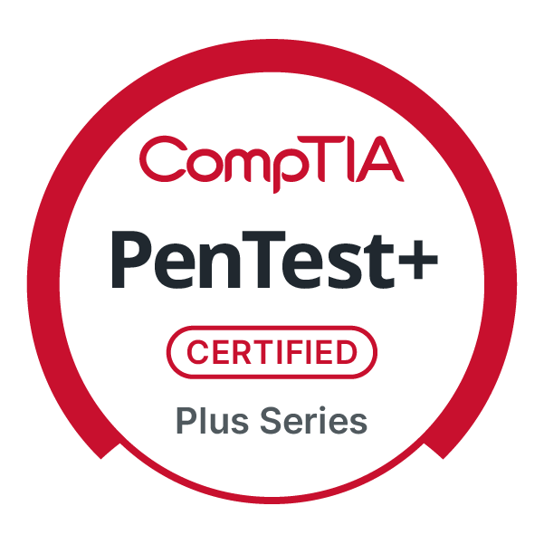
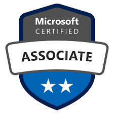
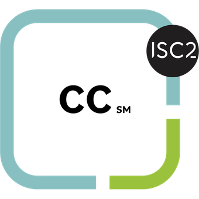

About
I am an IT Infrastructure and Cybersecurity professional with over seven years of experience designing, managing, and securing hybrid enterprise environments. My expertise spans on-premise Windows Server infrastructure, Active Directory architecture, Azure cloud services, VMware, Google Workspace, Microsoft 365, macOS and Windows environments, endpoint management, and security-focused operational practices.
My experience includes supporting organizations across global nonprofit, legal and professional services, executive search and financial recruiting, consumer goods, and marketing environments. Working across diverse operational models has strengthened my ability to design secure, scalable infrastructure solutions aligned to regulatory, performance, and business growth objectives.
I specialize in hybrid infrastructure architecture integrating on-premise systems with cloud identity and access controls. My work has supported initiatives aligned with HIPAA and NIST frameworks, including hybrid identity management, endpoint automation, audit readiness, and vulnerability remediation.
Certifications
Official digital badges linked to public verification. No credential IDs are displayed on this site.

CompTIA Security+ (ce)
CompTIACore security foundations: risk, identity, network security, operations, and incident response.

CompTIA CySA+ (ce)
CompTIASecurity analytics, detection, response workflows, and vulnerability management practices.

CompTIA PenTest+ (ce)
CompTIAPen testing concepts, assessment methodology, reporting, and remediation alignment.

Microsoft Certified: Azure Administrator Associate
MicrosoftAzure administration across compute, networking, storage, identity, governance, and operations.
Microsoft Certified: Azure Solutions Architect Expert
MicrosoftArchitecture, design, and implementation of secure, scalable Azure solutions.

ISC2 Certified in Cybersecurity (CC)
ISC2Security principles, risk, incident response basics, and governance-aligned controls.
Core Tooling
Categorized platforms and tools used across hybrid environments and service delivery.
Cloud & Infrastructure
Hybrid compute, virtualization, servers, and admin tooling.
Identity & Endpoint Management
Directory services, access control, enrollment, and device management.
Microsoft & Google Collaboration
Productivity, messaging, file collaboration, and interoperability.
Security Operations
Detection, response, automation, and security controls.
Email Security
Secure mail flow, encryption, and phishing/spam reduction.
DNS / CDN / Domain Management
Authoritative DNS, edge security, and domain operations.
File Platforms
Secure file storage and collaboration platforms.
IT Operations
Documentation, asset tracking, and service delivery workflows.
Automation & Development
Scripting, tooling, and workflow automation.
Business Systems
Line-of-business applications and operational platforms.
Project details are shared at a high level and are portfolio-safe.